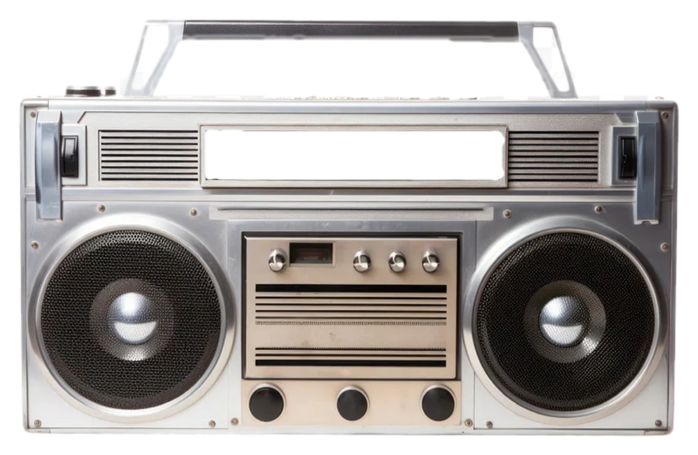

Loading stations...
If this remains, check the shared radio scripts.

The compact header radio and this full-size console share your station, track and listening position. If your browser pauses audio during a page change, tap Play to resume.

If this remains, check the shared radio scripts.
The music used by Pirate Radio is sourced from collections hosted by the Internet Archive. The Archive preserves a huge amount of historic media and makes projects like this possible.
Visit Internet Archive